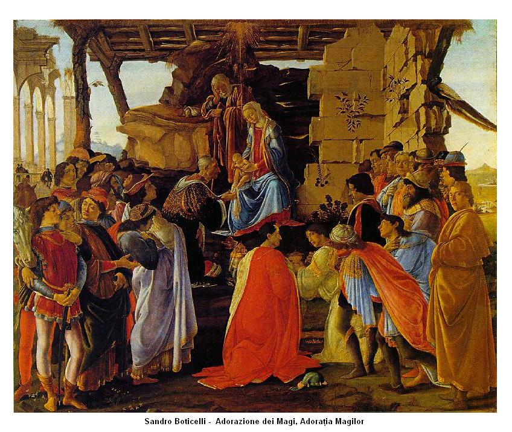

Sandro Botticelli

Sandro Botticelli - de fapt Alessandro di Mariano Filipepi - (n. 1 martie 1445, Florența – d. 17 mai 1510, Florența) a fost un pictor italian, unul din cei mai mari reprezentanți ai Renașterii italiene. Frumusețea și grația figurilor create de el, precizia liniilor și redarea mișcării fac din lucrările sale o operă ce simbolizează pictura epocii. Caracteristic artei lui Botticelli este și faptul că figurile pictate de el prezintă profunde sentimente umane. Personajele sale cu chipuri ușor melancolice au, în general, o expresie visătoare, Botticelli ne apare ca un cercetător atent al sufletului omenesc. Operele sale, inspirate de teoriile neoplatonice ale lui Marsilio Ficino, animator al "Academiei Florentine", atestă sensibilitatea deosebită și bogata viață lăuntrică a artistului.
Operă de tinerețe a lui Botticelli, Madona cu pruncul și doi îngeri poartă semnele influenței multor maeștri, de la Fra Filippo Lippi, la Verrocchio și Antonio Pollaiuolo, marchează însă multe elemente noi în pictura religioasă. Portretul Mariei și al pruncului Iisus, de atâtea ori repetat de diverși pictori, își pierde în opera lui Botticelli seriozitatea solemnă, câștigând sinceritate și realism.Botticelli a pictat cinci tablouri în care prezintă Adorația Magilor, cel mai cunoscut se află la Galeria Uffizi din Florența. Pictorul îi reprezintă pe toți membrii familiei Medici, precum și alte câteva personalități importante. Astfel, persoana a doua din stânga, cu pălărie roșie, este filosoful umanist Pico della Mirandola, ultimul din dreapta, în mantie portocalie, este însuși Botticelli.
Lucrările lui Botticelli pierd din popularitae în ultimii ani ai vieții sale, împinse în planul al doilea de operele lui Leonardo da Vinci, Rafael Sanzio și Michelangelo. Creația marelui maestru florentin, uitată la începutul secolului al XVI-lea, este redescoperită decenii mai târziu, când se dezvoltă stilul cunoscut sub numele de manierism. Pictorii englezi din secolul al XIX-lea vor fi entuziasmați de frumusețea figurilor lui Botticelli. Îi fascinează tocmai acea neliniște și melancolie pe care le vor îmbogăți în propriile lor lucrări cu romantismul caracteristic epocii lor.